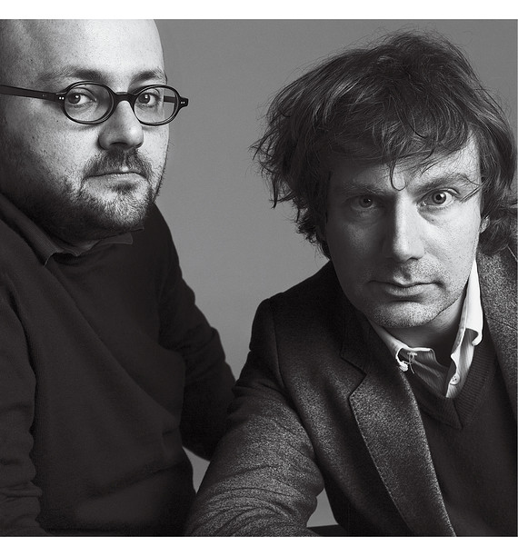

BIOGRAPHY of
M/M Paris

Michael Amzalag and Mathias Augustyniak formed their studio, M/M (Paris), in 1992. Since then, it has become one of this generation’s most distinctive and influential voices in graphic design. Having met at art school in Paris. Since then they have worked together as graphic designers and art directors on fashion, music and art projects.
Originally working for small independent music labels, M/M soon caught the attention of the fashion world, and later developed long-term collaborations with a rich array of iconic artists, art directors and musical artists – most notably, Björk and Madonna. They have also produced unexpected three-dimensional designs for the stage, restaurants and perfume.
Since founding M/M (Paris) in 1992, Augustyniak and Amzalag have had a strong hand in shaping the visual culture of the art, fashion and music worlds. They have had longstanding creative relationships with artists like Pierre Huyghe and Philippe Parreno and curators like Obrist. They have worked on catalogs for institutions like the Musée d’Art Moderne and the Pompidou Center. In 2005, M/M was part of a contemporary art show at the Palais de Tokyo in Paris and early last year had their first solo exhibition in a commercial gallery — Haunch of Venison in London (in Paris they are represented by Air de Paris). They have also designed productions for the Théâtre de Lorient in Brittany, ad campaigns for Balenciaga, Yohji Yamamoto and Calvin Klein Jeans and fashion editorials for V Magazine with their close friends and constant collaborators, the Dutch photographers Inez van Lamsweerde and Vinoodh Matadin. For two years M/M (Paris) served as the art directors for French Vogue, redesigning the magazine for the current editor, Carine Roitfeld. This season and next, you can see their handiwork in new campaigns for Givenchy and Stella McCartney; a fashion shoot they art-directed with the photographer Craig McDean appears in the June issue of W Magazine. And in music they are perhaps best known for their collaborations with Bjork, for whom they directed a video and created a typeface.
“I really think they changed Paris in a way that goes beyond graphic design",
says Obrist, who has worked with them on books and catalogs since the mid-’90s. Obrist thinks of M/M (Paris) in much the same way that Augustyniak and Amzalag think of themselves: not as graphic designers but as creators of a visual language that not only bridges the parallel worlds in which they work but ultimately transcends them as well. “Today we are used to the interplay of art and fashion, art and design, art and music,” Obrist says. “It was not the case 15 years ago.”
Augustyniak and Amzalag met in the late ’80s, when they were both students at L’École Nationale Supérieure des Arts Décoratifs in Paris, a place they describe as having a stultifyingly classical approach to the practice of art but a surprisingly progressive one when it came to theory. According to Amzalag, the communications department was irreconcilably split between commercial and noncommercial design, and while students were provided with the tools to present a concept, they were rarely encouraged to come up with one on their own. “Advertising was evil — not to be touched,” Amzalag says. “It was a utopian approach to graphic design. We knew it was a dead end.” But a few of the lectures stuck with them, and one in particular, titled “My Friend Fernand Léger,” was something of an epiphany. “This is where we got the idea that there is no such place called art or culture but it’s all interwoven,” Augustyniak says.
Amzalag was eventually kicked out of the school, and Augustyniak went on to get a Master’s in graphic design at the Royal College of Art in London. The two started to work together in the fall of 1991, and their first clients were in the French music industry, more by default than by choice. “No one wanted to work with music in France because there is no such thing as pop culture in France,” Augustyniak says. “It was not exciting.” But they were excited to be working and approached each job with a seriousness perhaps far beyond its merit. For one of their first commissions, an album sleeve for the singer Silvain Vanot, they created a collage from Polaroids, paper clips and old-fashioned cloth labels like the ones your mother sewed into your underwear when you went to sleep-away camp. M/M are at pains to explain the multiple levels of spontaneity and experience they extended to the project, analyzing it as if deconstructing a dense literary text. “We are creating material for archaeologists,” Amzalag says, acknowledging that these layers of meaning were most likely lost on pretty much everyone except the two of them.
Around that time they were also asked to do an album for Mathilda May, a French actress who was trying to jump-start a singing career. “The biggest disaster in French history,” Amzalag says, not indicating whether he means the album’s sleeve, the album itself or the actress. But it was M/M’s first chance to work on a project from beginning to end, including hiring a photographer and a stylist. Amzalag pulls out a prop from the shoot — a dusty sign with a hand-painted double M — recalling how the two set out with ambitious ideas about type, signs, symbols, the history of graphic design. “In the end,” Amzalag says, “she looked like a hooker.”
It was becoming painfully obvious to them that the divide between art and commerce was wider than they had imagined. “People wanted a service. “ ‘I pay you, give me what I want,’ ” Augustyniak recalls. And yet they continued to insist that they were not guns for hire. They wanted to be thought of as equal partners, something they still insist upon today. “We are designers but as we define that role, not just as a vector for someone’s ideas,” Augustyniak says. “It comes through us so we somehow distort it. We make that clear rather than hiding it.”
M/M (Paris) is not of the school that believes good graphic design is transparent or, worse, altogether invisible. They have been known to cut up and reassemble photographs into densely layered collages or to deface them with elaborate, occasionally erotic illustrations and ornate, hand-drawn type. What may have started out as a fairly straightforward advertising image can end up looking like a Rorschach test. An early campaign for Balenciaga featured the model Christy Turlington being stalked by an ominous blob. In another, an orgy of cutout models unfolds like a magnificent butterfly.
By their own estimate, M/M have something like 40 typefaces in various stages of development. Many fonts are created for a specific project or proposal only to find their true calling in another context. Allegrette, a primary-school-inspired font, which has come to be known as Bjork type, was originally conceived for an album called “Art of Singing.” (“With this typeface,” Amzalag says, “everything looks very cute. Even a bad poem looks cool.”) That fell through, but Allegrette materialized on a poster for the Théâtre de Lorient and then made its way to the cover of Bjork’s DVD “Volumen,” where it finally struck the right chord. This progression is not irrelevant — not for them anyway. “An image never interests us as such,” reads M/M’s mission statement. “Its relevance lies in the fact that it contains the sum of preceding dialogues, stories, experiences with various interlocutors and the fact that it induces a questioning of these pre-existing values. A good image should be in between two others, a previous one and another to come.”
To create the font Cesar, they commissioned a small child who did not know how to write to draw the alphabet. Each of the resulting 26 cryptic scribbles corresponds to a different letter. (When asked to contribute to the design of a cafe on the rue Ãtienne Marcel, they incorporated this decorative font into the pattern on the carpet. Unbeknown to most diners, there is an entire text encrypted on the floor.) Yet another alphabet of theirs is carved out of portraits that van Lamsweerde and Matadin took of 26 models. Ann-Catherine becomes the A, Bridget the B and so on all the way to Zoe.
It is difficult to discern whether M/M’s philosophy is an honest, logical expression of their interest in the creative process or merely a defiant effort to assert their own importance. “They have a unique signature,” says Nicolas Ghesquière, who has worked with them since his second season as creative director for Balenciaga. The designer Stella McCartney is another satisfied client. “They bring a fresh eye to the advertising campaigns, and they understand who I am and the DNA of the brand.” But there are those who when they look at M/M’s work see nothing but the designers’ fingerprints, who say that the only ideas that they are interested in communicating are their own. “But these were people who weren’t working with us who were saying this,” Amzalag is quick to point out. “When you are going to work with us, be aware that you are working with two personalities — two individuals,” Augustyniak says. “That doesn’t mean that something won’t be conveyed, but accept that it will have a level of distortion.”
Nowhere was this level of distortion more evident than in the show at the Palais de Tokyo. What was originally conceived as two separate exhibitions — one of the contemporary art collection of a prominent Greek collector, the other an M/M (Paris) retrospective — evolved into “Translation,” which is described in the accompanying limited-edition catalog as “a visual trip operated and articulated by M/M (Paris) with the Dakis Joannou collection.” In the Palais de Tokyo’s sprawling industrial galleries, well-known pieces by Jeff Koons, Maurizio Cattelan, Chris Ofili and Mike Kelley duked it out with advertising images for Calvin Klein Jeans, Balenciaga invitations and a trove of posters created by M/M (Paris) for various Théâtre de Lorient productions. The artist Yinka Shonibare’s piece, “Dressing Down,” was installed upon a variation of the Café Étienne Marcel carpeting, in a room lined with frenetic M/M-designed wallpaper, while the title for Kara Walker’s “Being the True Account of the Life of N,” writ extra large in the model alphabet, threatened to overtake the artwork itself. However visually stunning, the raucous installation often seemed less like a dialogue and more like a shouting match, with M/M apparently winning. “An art collection,” M/M explained, “is an individual’s chance to write their own story using art. In our way of working over the past 10 years, we have also collected little stories. When someone asks us to do an exhibition, it’s the opportunity for us to de-archive and re-edit all those microhistories.”
And how did the art world receive this creative intervention? “They still don’t want to talk about it,” Augustyniak says.
Their solo show in London caused a similar sensation. Titled “Haunch of Venison/Venison of Haunch,” M/M (Paris) created a visual identity for the gallery, which has been open since only 2002, reflected in the mirror of their own experience. In other words, a portrait of the gallery but also a self-portrait. “It’s not like we are graphic designers and suddenly decided to become artists,” they insist. But the approach, they say, made both people from the art world uncomfortable and people from the design world uncomfortable. This, we are meant to understand, was a good thing.
Recently, Hans Ulrich Obrist commissioned M/M (Paris) to create a Web site for the Serpentine Gallery, where he is now a director. The Serpentine already has a perfectly functional if totally unremarkable Web site, with a nice picture of the gallery in its bucolic setting in Kensington Gardens, and useful information about opening hours and future exhibitions. “There is no one better to do this,” Obrist exclaims, “because we knew that they would never want to design a Web site. So what would it be? An anti-Web site? An invisible Web site?” In answering his own questions, Obrist veers off into a tangent about quantum physics, and suddenly he is no longer talking about a Web site as we — or for that matter even Craig Newmark — know it, but a virtual art institution, an entire parallel world unto itself. If you click a button on the Serpentine Web site, you can see the M/M work in progress. It is a fat, squiggly animated line that emerges and disappears in an endless loop — a serpent eating its own tail.
source:M/M PARIS WEEBLY